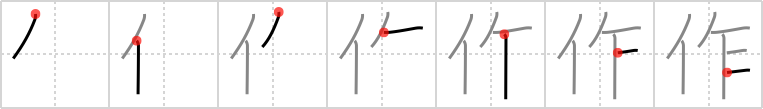

作
← →
make

Reading:
On-Yomi: サク、サ — Kun-Yomi: つく.る、つく.り、-づく.り
Heisig story:
Person . . . saw.
Koohii stories:
1) [dingomick] 26-2-2007(152): Mr T.'s favorite magazine is Make. He loves to make things. But he's a purist: he only uses saws, no power tools.
2) [smithsonian] 9-4-2007(70): When the A-Team crash lands on a deserted island, Mr. T salvages a saw from the wreckage and says, "I don't know about y'all foos, but I'm gonna make a raft.".
3) [thelooseteeth] 8-3-2009(36): Mr. T can make anything with his trusty saw.
4) [etpan] 27-11-2008(29): Chuck Norris can make a saw just by biting into a piece of iron !
5) [chamcham] 18-1-2010(15): Police ask a witness about what they saw and the person makes up a story instead of telling the truth.